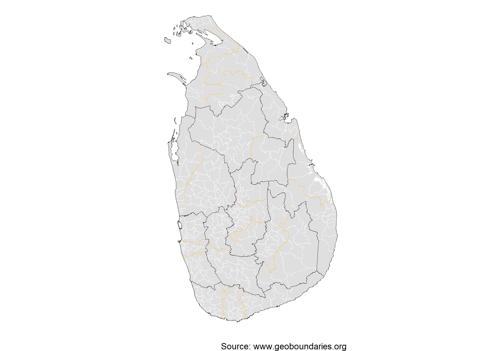

Attribution is required when using geoBoundaries.
Why this package?
The rgeoboundaries package provides an R-friendly interface to access and work with the geoBoundaries dataset (an open-license global database of administrative boundary polygons). Using this package, you can:
- Programmatically retrieve administrative boundary geometries (e.g., country → region → district) from geoBoundaries
- Use tidyverse / sf workflows in R to map, analyse and join these boundaries with your own data
- Work in an open-data context (geoBoundaries uses CC BY-4.0) / open licences1)
In short: if you work with geospatial boundaries in R (shape files, polygons, join with other data), this package simplifies the process.
Installation
You can install the developing version of rgeoboundaries with:
# install.packages("pak")
pak::pak("dieghernan/rgeoboundaries")Example usage
Single country
library(rgeoboundaries)
sri_lanka_adm1 <- gb_get_adm1("Sri Lanka")
sri_lanka_adm2 <- gb_get_adm2("Sri Lanka")
sri_lanka_adm3 <- gb_get_adm3("Sri Lanka")
library(sf)
library(dplyr)
library(ggplot2)
ggplot(sri_lanka_adm3) +
geom_sf(fill = "#DFDFDF", color = "white") +
geom_sf(data = sri_lanka_adm2, fill = NA, color = "#F0B323") +
geom_sf(data = sri_lanka_adm1, fill = NA, color = "black") +
labs(caption = "Source: www.geoboundaries.org") +
theme_void()
World dataset
See how the map of the logo can be created:
library(rgeoboundaries)
library(sf)
library(dplyr)
library(ggplot2)
world <- gb_get_world(adm_lvl = 1)
# Template: Sea as background
bbox_template <- st_bbox(world)
sea <- c(-179.9, -89, 179.9, 89)
names(sea) <- names(bbox_template)
class(sea) <- class(bbox_template)
sea_poly <- sea |>
st_as_sfc() |>
st_set_crs(st_crs(world)) |>
st_segmentize(dfMaxLength = 50000)
sea_line <- sea_poly |> st_cast("LINESTRING")
ggplot(sea_poly) +
geom_sf(fill = "#bee0ff") +
geom_sf(data = world, fill = "#f0b323", color = "white", linewidth = 0.1) +
geom_sf(data = sea_line, color = "black") +
coord_sf(expand = TRUE, crs = "+proj=robin") +
theme_void()Map on the rgeoboundaries logo
Documentation & Resources
- Visit the pkgdown site for full documentation: https://dieghernan.github.io/rgeoboundaries/
- Explore the geoBoundaries homepage: https://www.geoboundaries.org/
- Read the original paper describing the geoBoundaries dataset (Runfola et al. 2020).
License
This package is released under the CC BY-4.0 license. Note that the boundary data being accessed (via geoBoundaries) also uses open licences; please check the specific dataset metadata for licensing details.
Acknowledgements
- Many thanks to the geoBoundaries team and the William & Mary geoLab for creating and maintaining the dataset.
- Thanks to the R package community and all contributors to this package’s development.
- If you use rgeoboundaries (and underlying geoBoundaries data) in your research or project, a citation and acknowledgement is greatly appreciated.
How to cite
If you are using this package in your analysis, please cite the original geoBoundaries work:
Runfola, D. et al. (2020) geoBoundaries: A global database of political administrative boundaries. PLoS ONE 15(4): e0231866. https://doi.org/10.1371/journal.pone.0231866
A BibTeX entry for LaTeX users:
@Article{10.1371/journal.pone.0231866,
doi = {10.1371/journal.pone.0231866},
author = {Daniel Runfola and Austin Anderson and Heather Baier and Matt Crittenden and Elizabeth Dowker and Sydney Fuhrig and Seth Goodman and Grace Grimsley and Rachel Layko and Graham Melville and Maddy Mulder and Rachel Oberman and Joshua Panganiban and Andrew Peck and Leigh Seitz and Sylvia Shea and Hannah Slevin and Rebecca Youngerman and Lauren Hobbs},
journal = {PLoS ONE},
publisher = {Public Library of Science},
title = {geoBoundaries: A global database of political administrative boundaries},
year = {2020},
month = {4},
volume = {15},
pages = {1-9},
number = {4},
}Legal
With respect to works on or made available through download from the this website, we make no representations or warranties–express, implied, or statutory–as to the validity, accuracy, completeness, or fitness for a particular purpose; nor represent that use of such works would not infringe privately owned rights; nor assume any liability resulting from use of such works; and shall in no way be liable for any costs, expenses, claims, or demands arising out of use of such works.